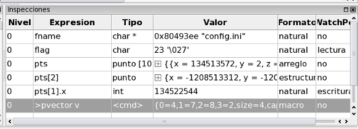
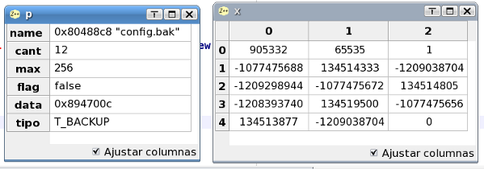
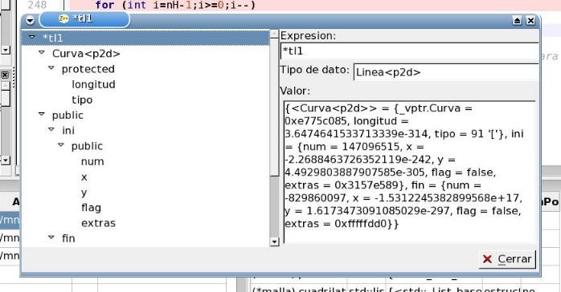

Inspecciones
Las inspecciones permiten observar el contenido de las variables de su programa cuando este se ha interrumpido. En ZinjaI existen diferentes formas de inspeccionar los datos. La forma más sencilla consiste en hacer click sobre el nombre de variable a inspeccionar en el código fuente y dejar el mouse inmovil sobre el mismo durante un segundo y medio. Luego de este tiempo, si el cursor estaba sobre un nombre de variable válido, se desplegará un tooltip con su contenido. Si se selecciona un fragmento de código, ZinjaI intentará evaluar todo el fragmento como una expresión, pudiendo así visualizar expresiones además de variables simples. Sin embargo, la forma más potente de observar los contenidos es utilizar el panel de inspecciones. El Panel de Inspecciones se despliega al iniciarse la depuración, y cuando la ejecución se interrumpe, permite agregar inspecciones en su tabla, cuyos valores se actualizarán automaticamente cada vez que se interrumpa el programa. Es decir, cuando el ususario define una nueva inspección introduciendo una expresión en la primer columna de la tabla, inmediatamente se muestra su valor, y en las subsiguientes interrupciones, se actualizará automáticamente el mismo en caso de haber sido modificado.

La tabla de inspecciones permite además realizar algunas operaciones adicionales. En el caso de una inspección simple (un tipo de dato nativo), se puede modificar su valor haciendo doble click en la columna "Valor" e introduciendo el mismo. Se puede seleccionar además, para los datos numéricos, la base a utilizar para su representación haciendo doble click en la columna Formato. Las bases posibles son: binaria, octal, decimal, hexadecimal, o natural (siendo esta última en realidad una de las anteriores, dependiendo cual del tipo de dato). En el caso de inspecciones compuestas (por ejemplo un arreglo, una clase o una estructura) la tabla de inspecciones permite reemplazar rápidamente una única inspección, por el conjunto de inspecciones que representan los subelementos de la primera. Por ejemplo, en el caso de un arreglo, reemplaza una inspección que representa todo el arreglo por n inspecciones, cada una representando un elemento del arreglo; en el caso de una clase, reemplaza una inspección que representa toda la clase por inspecciones que representan individualmente cada uno de sus atributos. Para realizar esta operación debe hacer doble click sobre el valor de la inspección compuesta. Estas inspecciones se identifican visualmente por presentar un símbolo "+" precediendo su valor en la tabla.
Si el tipo de dato inspeccionado es un dato compuesto (arreglo, matriz, clase), puede obtener una visualización adicional en forma de matriz seleccionando la opción "Ver en tabla separada" del menú contextual (click derecho sobre la inspección). Esta opción despliega una nueva ventana donde los datos se organizan en un arreglo de celdas uni o bidimensional. Si la inspección representa un arreglo o matriz, los rótulos de las filas y columnas representan los índices que la recorren. Si la inspección representa una clase o estructura, los rótulos de las filas indican cada uno de sus atributos.

ZinjaI ofrece además un Explorador de Inspecciones que permite, como su nombre lo indica, explorar el contenido de una inspección. Para acceder al mismo debe hacer click con el boton derecho sobre la inspección que desea explorar y seleccionar la opción "Explorar Inspeccion". El explorador resulta mayormente útil para inspecciones complejas, ya que presenta la estructura de los datos a inspeccionar en forma de árbol jerárquico. Por ejemplo, en una clase, el árbol tendría subitems para cada grupo de atributos según visibilidad (privado, protegido o publico), y subítems para cada clase padre. Los primeros tendrian nuevamente como subitems a los atributos propiamente dichos, mientras que los segundos a los grupos anteriormente mencionados, pero de la clase padre. Así, recursivamente el árbol podría ser infinito si por ejemplo, la clase incluye punteros a otras clases y se forma un ciclo. El usuario puede explorar estas estructuras en el explorador hasta el nivel que desee, visualizando los componentes de la misma individualmente, y su estrutura interna (la forma del árbol está determinada por el modelo de objetos interno que gdb utiliza para las inspecciones).

El Panel de Trazado Inverso, permite, utilizando el botón derecho del mouse, agregar a la table o explorar rápidamente los argumentos de una función o todas las variables locales de la misma (en su marco correspondiente) mediante un solo click.
Para utilizar macros del depurador (gdb) para generar y formatear las inspecciones, debe introducir la expresión completa para invocarlas anteponiendo el signo mayor. Por ejemplo, si la macro pvector sirve para visualizar un vector que recibe como primer parámetro, la expresión a ingresar en la tabla será ">pvector v" (siendo v el nombre del vector). El archivo desde el cual el depurador carga las macros se puede configurar en la pestaña Depuración del cuadro de diálogo de Preferencias para programas simples y por defecto para proyectos, o desde el diálogo de Configuración del Proyecto para definir macros específicas para un proyecto. Si define una macro que presente el resultado en un formato similar al que utiliza gdb para clases y arreglos ( listas entre llaves con campos/elementos separados por comas, cada uno con el formato "nombre=valor"), ZinjaI también puede presentar dichos resultados en la Matriz de inspección.
Finalmente, la tabla de inspecciones permite convertir las inspecciones en Watchpoints. Un watchpoint (no existe una traducción al castellano suficientemente adecuada para esta palabra) es un tipo especial de interrupción, que se basa no en un punto del código, si no en el valor de una variable o expresión. Haciendo doble click en la columna "WatchPoint" de una inspección, se puede definir el mismo y hacer que el programa se interrumpa cada vez que se valla a leer y/o escribir esa posición de memoria (la correspondiente a la/las variables que intervienen en la inspección).